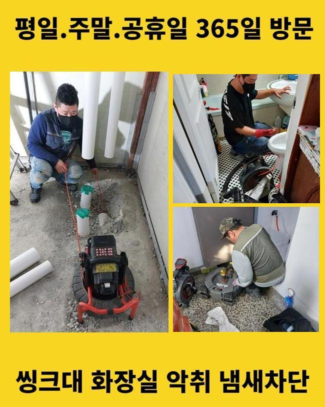
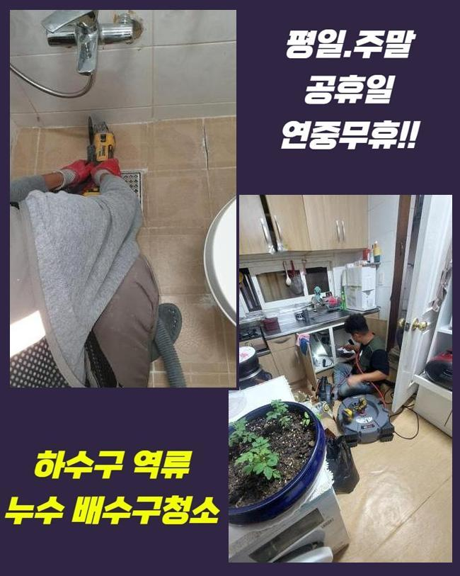
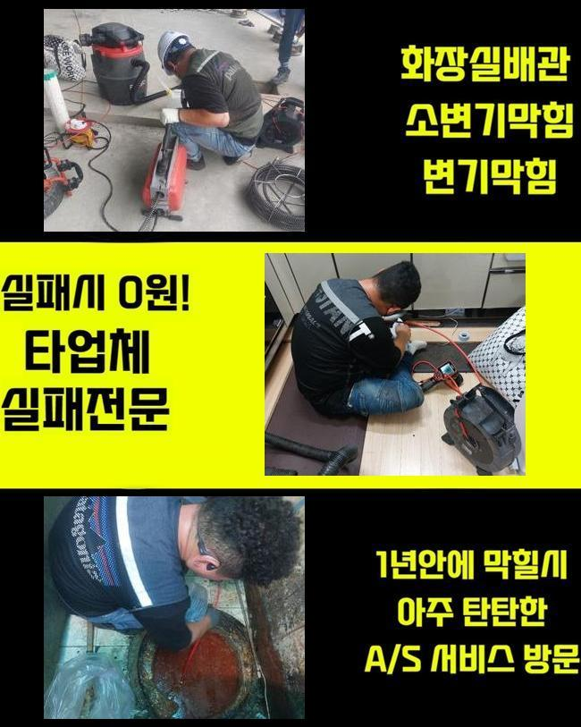
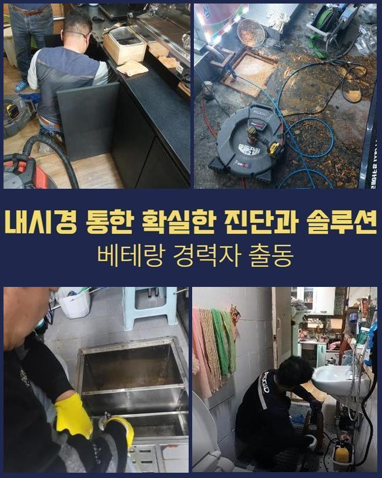
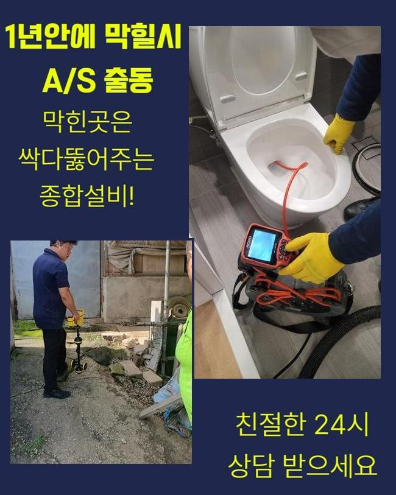
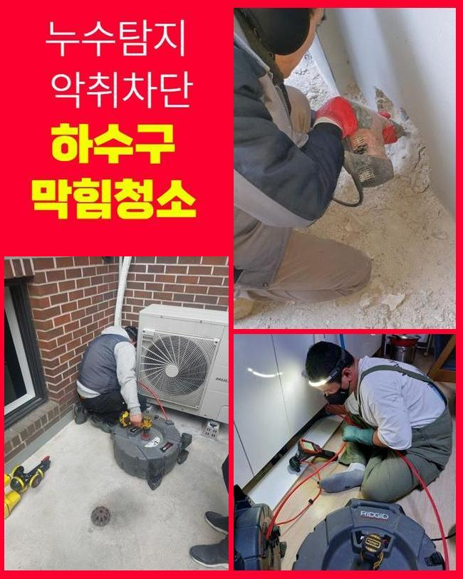
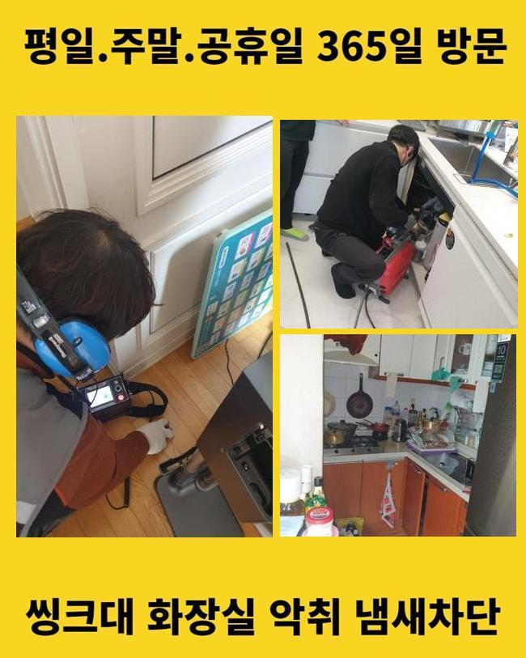

🏠 동대문 용두동오수관막힘 청량리동 하수구청소 누수
용인 하수구막힘 전문 시공 후기

📋 작업 개요
- 위치: 용인
- 서비스 유형: 하수구막힘, 배관막힘, 누수수리, 뚫는업체, 배관청소, 악취차단
- 작업 일시: 2025. 5. 13. 0:27
- 업체명: 하수구수사대 (010-5615-2118)
🔍 문제 상황
동대문 용두동오수관막힘 청량리동 하수구청소 누수
높은 건물에서 하수의 범람이 나타났다고 접수를 받고서 얼른 개선을 해드리려고 막힘이 생긴 곳으로 가봤습니다
규모가 꽤 되는 건물이면 다수의 세대 속에 있는 배관들이 한곳으로 모이는 형상을 하고 있는 건물들이 상당히 많아요
낱개의 한 배관에서 결함이 탄생했다고 해도 이 고장이 확산돼서 많은 거주자분들이 어려움을 감당해야 할 수 있습니다
오늘 하수구뚫음을 한 곳은 많은 점포들이 운영되고 있던 상가빌딩이었으나 뜬금 없이 찾아온 하수구 곤란으로 가게 오픈을 못하다 보니 당황스러운 감정을 호소하는 상태였어요
이렇게 거대한 건물에서 하수구 장애가 반복적으로 유발될 시에는 세입자나 건물주 모두에게 어려움을 선사할 수 있는 사안이니 의뢰받는 즉시로 현장에 찾아가고 있습니다
도착하면 막힘으로 인한 피해가 가장 심한 곳부터 찾아가서 유속이 얼마나 느려졌는지 확인해봐요
수돗물의 배수테스트의 의의는 물을 받아서 붓거나 강력하게 오픈해서 배관 아래로 이 수돗물이 얼마나 빨리 나가는지를 측정하여 막힘 정도를 파악합니다
통수되는 속도도 심각하게 낮아진데다 심지어 툭툭 멈추는 현상이 분명히 존재한다는 사실을 몸소 깨닫게 되었습니다
여러곳에서 하수막힘 문제가 빚어진 것은 사실 배관의 내면에 생각보다 많은 노폐물들이 끼어있을 상황임이 추정되었습니다

🔎 원인 분석
💡 전문가 진단: 정밀 진단 장비를 사용하여 슬러지의 고착 여부를 판명하고 타격/세척 작업을 실시했습니다.
덩어리화가 된 찌꺼기들을 싹 소강시키지 못할 경우에는 기하급수적으로 피해가 전이될 수 있다보니 작업의 진행도를 올렸어요
하수구 고장의 주범을 꼽자면 물이 나가는 통로를 메꿔버린 오물일 때가 많으니 전부 확인해서 삭제시켜야만 통로가 나옵니다
고객님들이 평범하게 물을 쓰실 때마다 어느정도의 찌꺼기들은 형성되는데 주방이나 바닥의 배수구를 통과하여 바깥으로 나가는 동안에 특정 영역에서 붙어버려서 심각한 장애물으로 전락합니다
일부러 생활 쓰레기를 내버리는 게 아니라도 일반 하수에 섞인 미량의 석회나 미네랄 성분이 고착화되기도 해요
파이프라인을 확인해 봤더니 기름기와 모발과 같은 비수용성의 물질들이 자리하고 있었는데요
얽히고 꼬이다가 끌어당기는 힘까지 생긴다면 제거하기가 더욱 난감합니다
물이 나가는 길목을 차단하면 더러운 물의 역행까지 피할 길이 없을 까다로운 상황이 됩니다
날마다 물과 만나기 때문에 위생적으로도 빠르게 나빠질만한 조건을 다 갖추게 되며 부패과정에서 유발되는 냄새까지 실내 곳곳에 퍼져서 더 곤란해지기도 합니다
보통 하수가 이동하는 파이프 속은 내내 습하기에 위생도 더 나빠지는데다 하수구냄새까지 만듭니다
오물이 쌓인 쪽들이 다수의 공간일 수 있다보니 총 문제점들을 발본색원해줘야 합니다
짧은 하수구 구간상의 오류라면 석션장치만 가동시키더라도 뚫는 게 가능할 수 있는데요

🔧 작업 과정
독특한 생김새라거나 연결 구간이 많다보면 막힘을 야기하는 부분이 찾아볼수록 정말 많을 것입니다
배관시스템의 대략적인 구조와 내부 오염물질의 규모를 미리 탐색하는 게 필요합니다
물을 한순간에 내려보내도 뚫리는 기색이 없다면 과하게 커져서 빈틈이 없다거나 단단해졌을 수 있어요
초기를 넘어선 막힘건을 풀어내기 위해서는 막힘을 유발한 뿌리를 발굴해서 그 자리에서 떼내야 합니다
방해물의 강직도와 같은 상황에 대한 변별력이 있어야만 원활한 작업 흐름을 그릴 수 있습니다
배관에 넣는 내시경은 어둑하고 칙칙한 관로를 현재 상황에 대해 알려주는 장치로써 찌꺼기가 고정된 좌표와 말라붙은 오염원의 특징을 체크할 수 있게 기반을 마련합니다
카메라를 중간중간 주입해서 조사를 해보면 작업이 놓치는 구간은 없는지 짚고 넘어갈 수 있다보니 보다 효율적인 청소가 이뤄집니다
청소에 앞서서 배관의 상태를 가볍게 확인할 때와 앞선 작업이 깔끔히 끝났는지 더블체크 해주기 위한 수단으로 활용하고 있습니다
관로 전반을 검토해보았더니 메인관로를 포함하여 인접한 파이프까지도 이 노폐물들이 눌러붙어 있는 상황임을 직접 관측할 수 있었는데요
비교적 가벼운 막힘이라면 진동을 소지한 단단한 와이어 스프링이나 플렉스샤프트를 접목해서 이물질을 자잘하게 절단시켜서 문제를 풀어나갈 수도 있는데요
건물의 바깥쪽으로 이어지는 곳에 생각보다 넓은 섹션들에 오물이 들어갔다면 중소형 장비로는 효과를 보기는 다소 힘들 수 있습니다
넓다보니 그만큼 오염원이 브레이크없이 쌓여만가니 작은 석션기만 돌려서는 턱도 없을 수 있습니다
사이즈와 규격이 큰 편이라면 고압의 물줄기를 분사하는 고압수를 분사하는 기법을 권장하고 싶습니다
크고 작은 배관에다 두루 쓰는데 들어가기 쉬운 크기의 노즐을 합체시키고 오염부위를 청소하는 기술이 있는 도구로 강력한 오물까지 싹 제거됩니다
공간에 있는 배관들은 생각보다 강하지 못해서 현장에 적합한 세기를 신중하게 결정하고 있습니다
하수구 안을 고쳐주기 전에 배관의 튼튼한 정도 역시 꼼꼼히 숙지를 해주고 본 시공에 들어갑니다
장소마다 강도 조절을 하면서 배관 청결 작업을 꾸준하게 임하면서 통수장애를 만들 정도로 배관 직경을 막아섰던 침전물을 흔적도 없이 소강시키고 정상화를 해주었습니다


✅ 작업 완료
갈린 흔적이 되는 파편까지도 떠다니고 있는 건 아닌지 이리저리 살펴본 후에는 성능을 완전 복구할 수 있습니다
물이 시원스럽게 나가는지 통수 검사도 여러차례 해드리고 질의사항이 있다면 놓치지 않고 이해되도록 알려드려요!
외양이 깔끔한지도 체크하고 정상적인 이용이 바로 가능할 것인지 야무지게 체크해 드립니다
여러 기구들을 빠지지 않고 쓰면서 결함이 완전히 회복되도록 하수구의 불능 사태를 부드럽게 풀어나갑니다
고객님 댁의 하수에 대해서 도움을 요청하시고 싶다면 늦은 시간이라도 전화주세요




⚠️ 베란다 누수 및 방수 관리 방법
- ✅ 비가 많이 올 때 창틀 주변이나 아래층 천장에 얼룩이 생기는지 정기적으로 확인해 보세요.
- ✅ 우수관 주변 실리콘 마감이 들뜨거나 깨진 틈새가 있는지 손상 여부를 수시로 체크하세요.
- ✅ 베란다 바닥 타일의 줄눈(메지)이 소실되면 그 틈으로 물이 침투하여 누수가 유발됩니다.
- ✅ 누수 의심 증상 발견 시 방치하면 아래층 손실이 커지므로 즉시 전문가의 진단을 받으십시오.
💡 핵심 정리
- 확실한 장비 작업(내시경 점검 및 샤프트 스케일링)으로 원인을 뿌리 뽑습니다.
- 작업 후 1년 이내에 동일한 부위 재발 시 100% 무상 A/S 서비스를 보장합니다.
- 서울 · 경기 · 인천 전 지역에 24시간 언제든 긴급 출동할 수 있도록 항시 대기 중입니다.
❓ 자주 묻는 질문 (FAQ)
🚨 용인 하수구막힘 문제로 고민이신가요?
정확한 원인 진단과 확실한 시공으로 재발 없는 해결을 약속드립니다.
24시간 긴급 출동 | 서울 · 경기 · 인천 전지역 | 1년 내 재발 시 무상 A/S